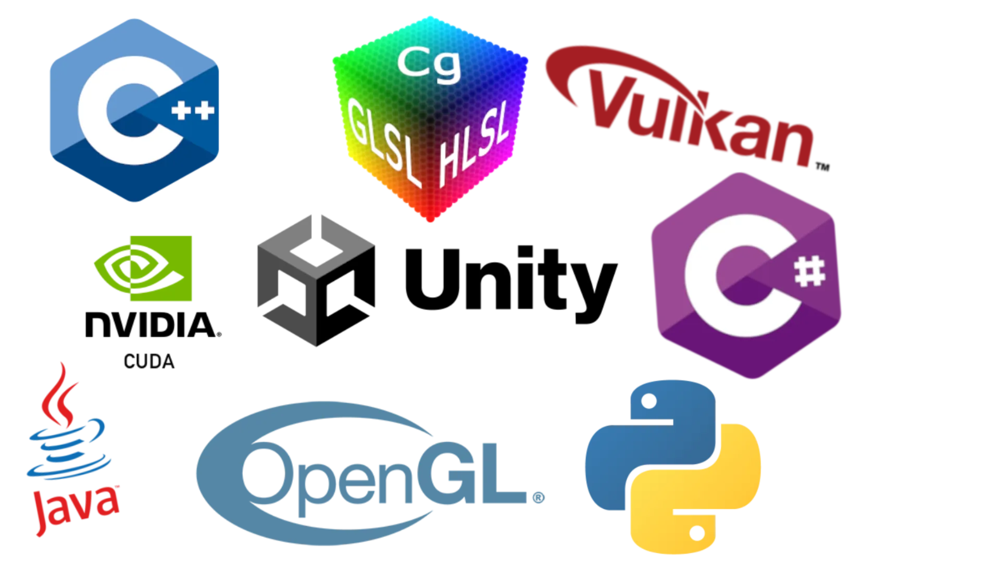
I'm passionate about Graphics Programming and Game Development. I like building applications from the ground up and learning new things every day.
Currently studying at Polytechnic University of Milan, majoring in Computer Graphics with a minor in AI and Operational Research.
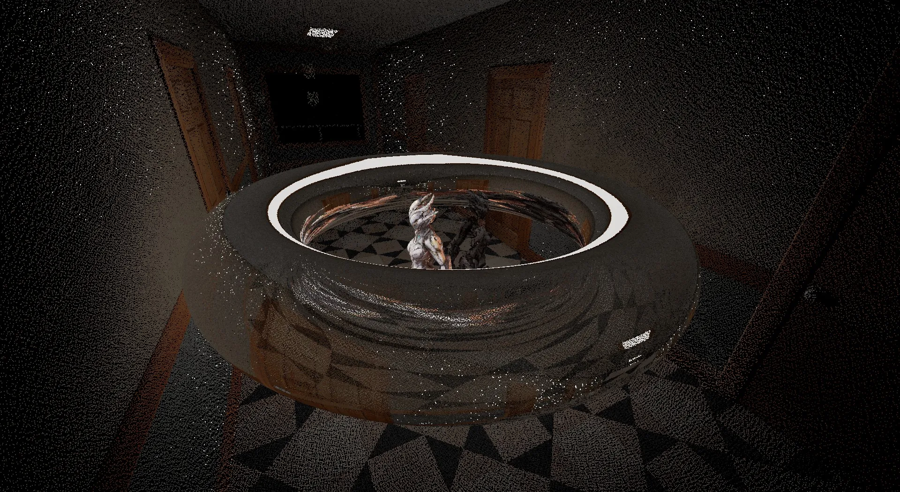
Custom Vulkan engine with path tracing capabilities. It simulates a toroidal sensor to perform geometric and photometric acquisition and generates a synthetic dataset for a Gaussian Splatting model.
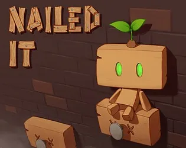
2D platformer game developed in Unity. Creates a novel gameplay by mixing Point-and-Shoot mechanics with classic platforming.
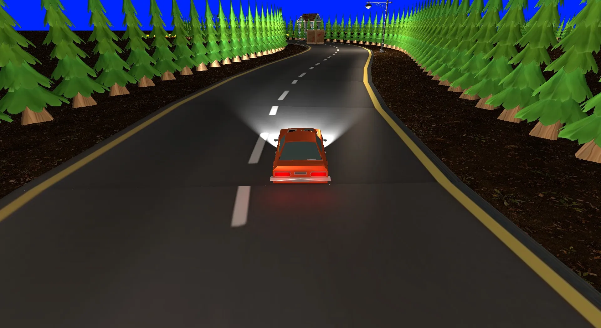
My very first Vulkan Engine. Created to explore the rendering pipeline and fundamental concepts of rasterization.
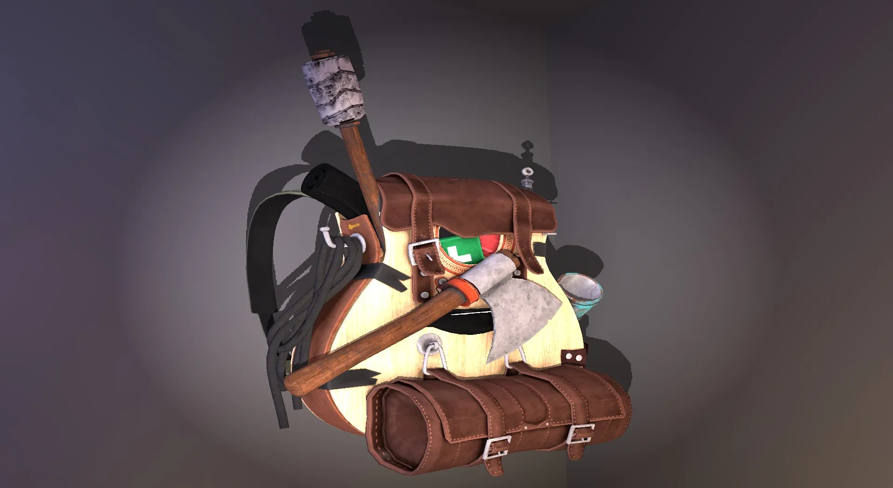
Deep dive into OpenGL-SC, analyzing its strengths for safety critical applications. Created test environments to profile and compare OpenGL-Desktop performances against its SC counterpart.
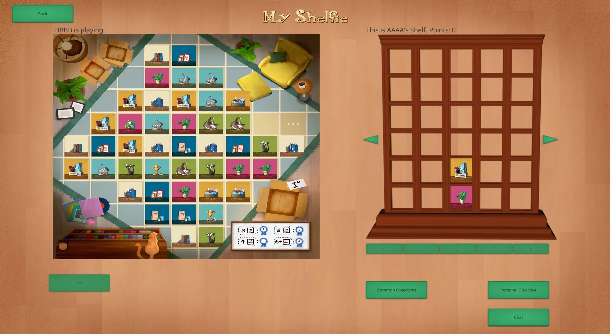
Digital version of a board game by Cranio Creations. It supports both a CLI and a GUI version. It implements a client-server paradigm to allow hosting multiple games concurrently.
It is no secret that Path Tracing is able to reproduce breathtaking visuals. Alongside Physical Based Rendering (PBR) workflows, it is the go-to technique for simulating physically accurate scenes. However, the computational power needed for this technique is a dealbreaker for many commercial GPUs, especially if real time rendering is necessary. That's where this project comes in. The idea is simple: place a sensor inside a path traced environment to scan it and generate a synthetic dataset for a Gaussian Splatting model. This way, each scene can be reconstructed using Gaussian primitives, and thus exploiting well optimized rasterization techniques without losing the fidelity of the path tracer. Let's explore it in details!
First, we have the Graphics Engine. It exploits Vulkan Hardware Accelerated Ray Tracing to render images on screen. In order to make each perspective free of noise, many techniques have been employed. Most noticeably, Temporal Accumulation is used to combine multiple frames together to smooth out the noise. Next Event Estimation (NEE) is exploited to quickly light up scenes, and a Blue Noise texture speeds up the whole process by generating high frequency noise, which is "cleaner" and easier to remove. The engine then uses either a Metallic-Roughness PBR workflow or a Specular Glossiness one to make light interact with each object realistically.
Once the scene is fully rendered, a Toroidal Sensor is placed in the environment. This has a dual usage. On one side, it scans the scene and produces a dense Point Cloud. Several sampling techniques have been tested, ranging from a pure random sampling to a much more effective Halton sampling, all the way to custom Importance Sampling methods. On the other side, it performs photometric acquisition by placing a camera on the centerline of the torus and collecting different views of the scene.
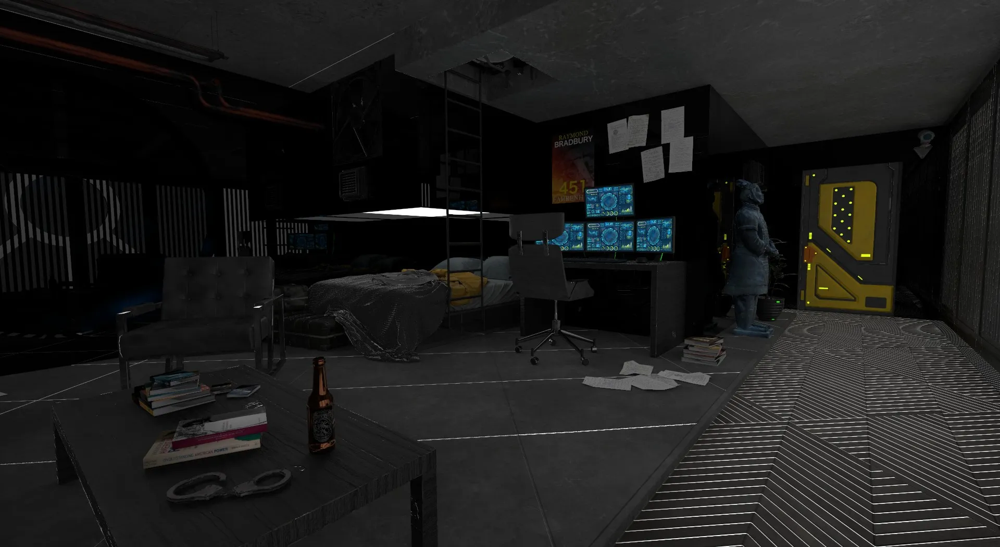
Base Scene
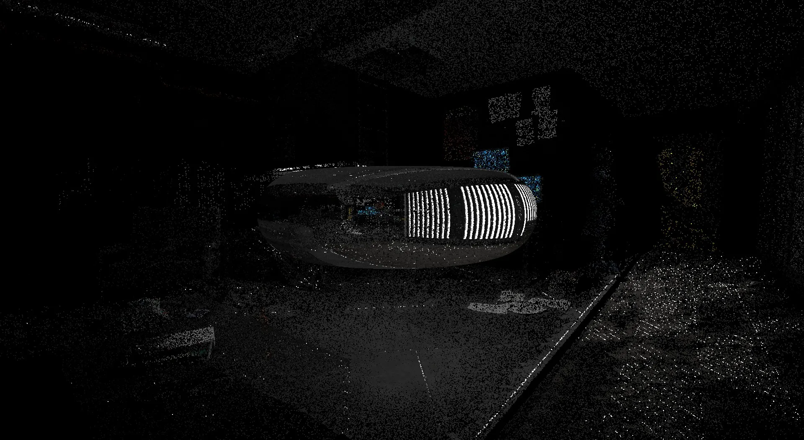
Point Cloud
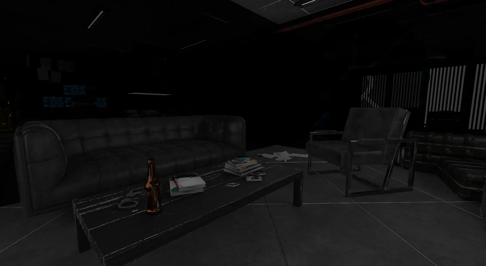
First view
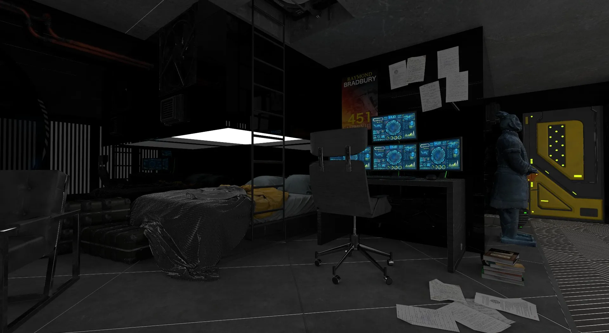
Second view
The collected data from the sensor serves as an initialization state for the training of a Gaussian Splatting model. All experiments were conducted with the vanilla version of the architecture. By dividing the geometric and photometric acquisition, the density of the generated point cloud is independent of the number of views collected. This allows the model to quickly converge to the optimal solution with a smaller dataset for training. Here are some of the results.
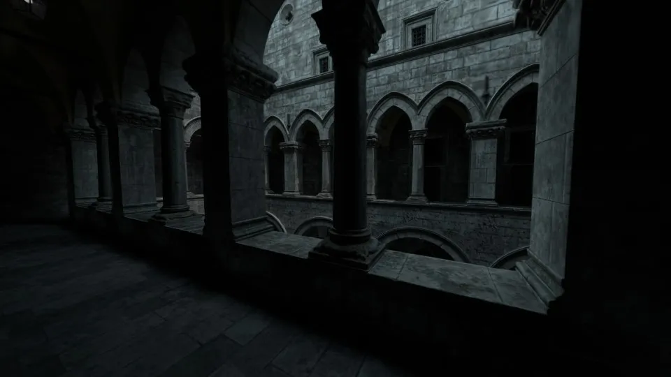
Sponza
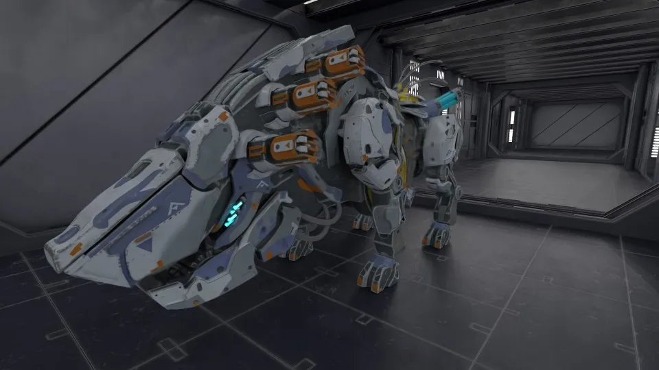
Behemoth
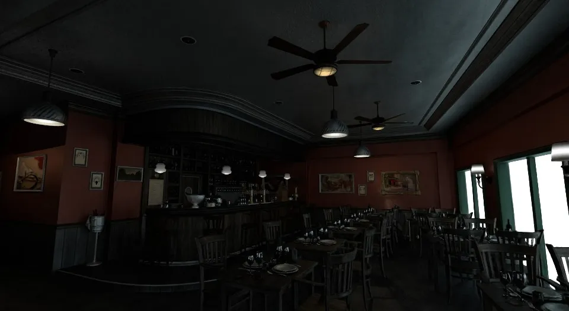
Bistrot
Developed for the Polimi "Game Design and Programming" course, Nailed-It is a 2D platformer that tests both your reflexes and your aim. The gameplay mixes elements of a classic 2D platforming game with mechanics of Point-&-Shoot ones. As the Team Leader, I guided a group of developers and artists to deliver a polished experience in just a couple of months. Beyond management, I served as the Gameplay Programmer, Level Designer and handled the Sound implementation.
One of our core pillars was gameplay feeling. We decided to build the movement of our character completely from scratch, without relying on any of Unity's pre-made scripts. This way, we perfectly tailored it to our desire, taking inspiration from well known games such as Hollow Knight, Celeste, and Super Meet Boy. Moreover, all collisions and physical interactions with the environment are custom and implemented through the use of Unity's Raycast system. To capture the "weight" of the movement, we implemented custom variable jump heights, coyote time, and jump buffering, alongside other small quirks.
The nail-shooting mechanic was particularly challenging, requiring a custom projectile system that interacts seamlessly with our manual collision detection. We exploited a secondary layer of colliders to handle the nailing, allowing for more permissive areas where shots are considered valid. Additionally, we developed many others' gameplay mechanics, such as a gliding system, a quick spawn, a soft "CTRL-Z" to undo last action,...
Create Your Path
Block The Obstacles
Avoid The Blades
Finally, I took charge of the Auditory Experience. Every "thwack" of the nail and every footstep was designed to provide tactile feedback to the player. By integrating these sounds directly into our custom movement states, we ensured that the audio wasn't just an overlay, but a functional part of the gameplay loop.
What is the best way to learn Vulkan? It's obvious: by making a game! This project represents my initial steps into the API, moving away from the "black-box" abstraction of legacy APIs to embrace the explicit control and verbosity of the Next-Gen Graphics API. It was built following the industry-standard architecture to understand how modern GPUs actually "think".
As far as the "game" goes, it is a simple car racing simulator where you have to collect flags around the track in a short amount of time while avoid obstacles. While the physics implemented is simplistic, a peculiar aspect of the gameplay regards collision detection. I implemented a GJK collision detection algorithm from scratch, so to make bumping into an obstacle extremely precise and efficient. More over, I programmed this system to consider specific section of an object's mesh: this way I could check only the bases of trees for collisions, since the car can't leave the ground.
From a more technical point of view, this project allowed me to explore basic Graphics Programming concepts. I had to deal with Render Passes, Buffers and Samplers, among the many. As performance was a major aspect of this project, I exploited Vulkan's Push Constants for fast data exchange between the CPU and the GPU. This was also my first time creating shaders for the Rendering Pipeline. I tested a variety of light implementation and responses, based on the objects in the scene, going from a simple Phong model to a more sophisticated Cook-Torrance model.
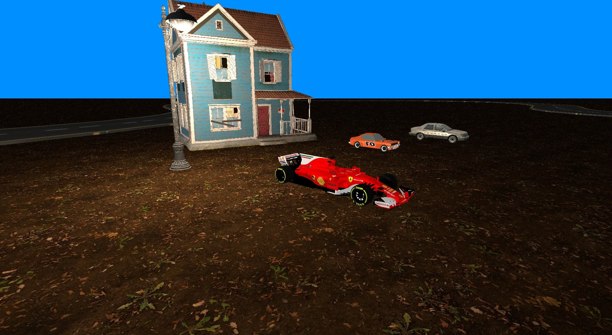
Car Selection
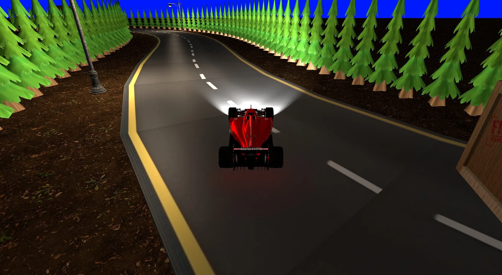
In Game Car
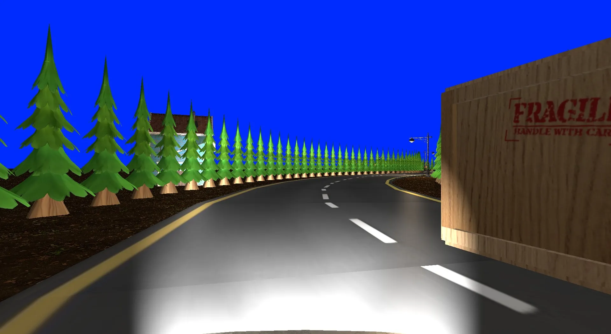
First Person Camera
By the end of this project, I had a fully functional rasterizer capable of rendering 3D models. This technical foundation was essential for moving toward much more complex projects.
In safety-critical domains like avionics or automotive, unpredictability is unacceptable. This research project explores the core differences between the flexible Desktop version of OpenGL and its deterministic counterpart: OpenGL-SC. By carving out a restricted subset of functions, SC ensures that every draw call behaves exactly as written, facilitating the rigorous static analysis and certification required for life-critical systems.
To quantify the trade-offs, I conducted a series of experiments, starting with the "World of Cubes" scenario. I compared Desktop Instance Rendering—which squeezes performance through GPU-side loops—against SC's requirement for explicit, single draw calls. The results were telling: while Desktop OpenGL achieved higher raw FPS, the SC implementation provided a far more stable frame rate, directly aligning with the requirement for predictable timing in real-time systems.
One of the most interesting challenges was emulating Compute Shaders. Since OpenGL-SC 2.0 lacks native compute support, I had to "fake" the computation using a Fragment Shader pass on a full-screen quad. I used an animated Menger sponge fractal to stress the GPU, discovering that while native compute dispatches are faster, the emulated approach offers a meaningful Worst Case Execution Time (WCET) estimate, as its execution is fully defined at compile time.
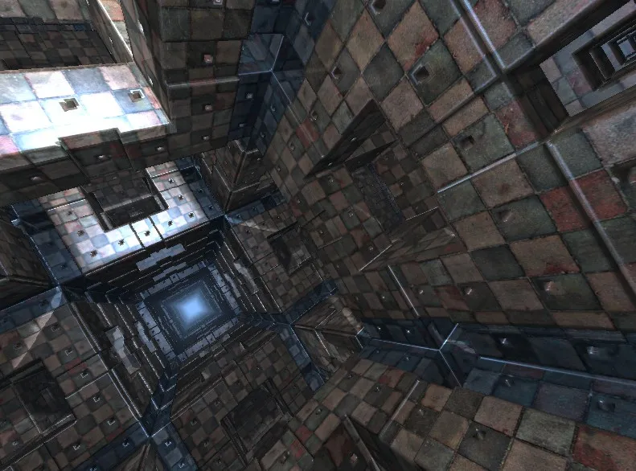
Menger Sponge
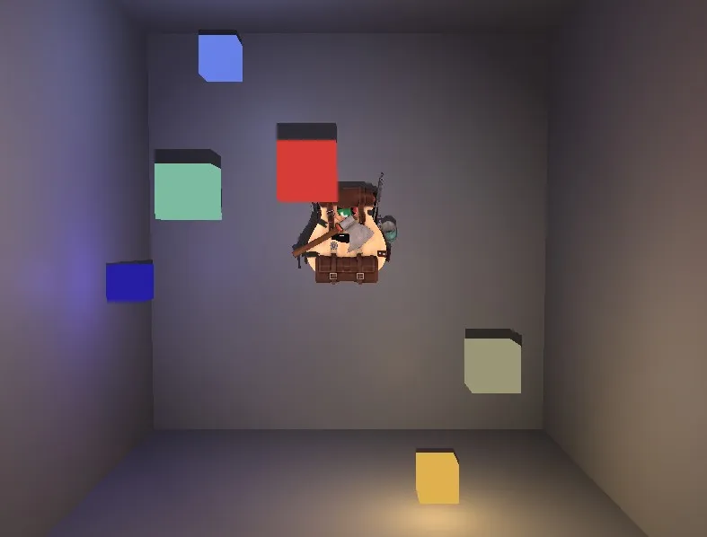
Shadows & Lights
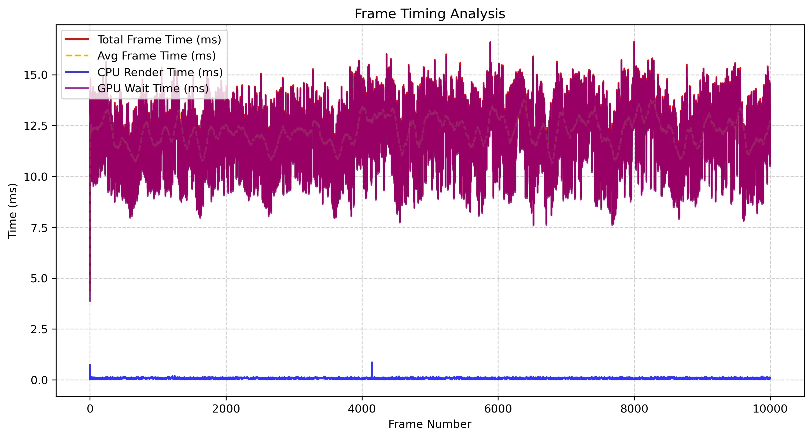
Timing Analysis Example
Finally, I explored Lighting and Shadows, where the absence of Vertex Array Objects (VAO) in SC forced me to explicitly redefine data layouts for every frame. This highlighted the fundamental trade-off of this study: Desktop OpenGL prioritizes speed and flexibility, while SC deliberately sacrifices peak efficiency for determinism, stability, and certifiability.
Developed for the "Software Engineering" course at Polimi, My Shelfie is a digital adaptation of the popular board game by Cranio Creations. It implements the complete rulebook, managing everything from tile placement validation to complex scoring systems across a network.
The Board
The project is built on a strict MVC (Model-View-Controller) architecture to decouple the game core from the user interfaces. To ensure connectivity across different environments, we implemented a hybrid communication layer supporting both RMI and Sockets. The server is designed to be highly concurrent, capable of hosting Multiple Games simultaneously while maintaining isolated game states for each lobby.
One of the core challenges was achieving Disconnect Resilience. In a distributed environment, a player's connection failure shouldn't ruin the experience for others. We developed a sophisticated heartbeat system and state-recovery mechanism that allows players to rejoin a match in progress. Furthermore, we integrated a Real-time Chat system, supporting both global and private messaging, to preserve the social essence of the original board game.
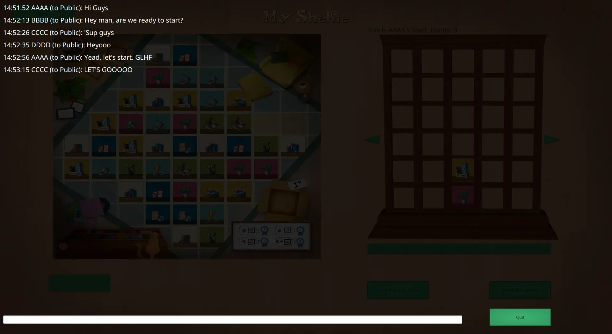
In Game Chat
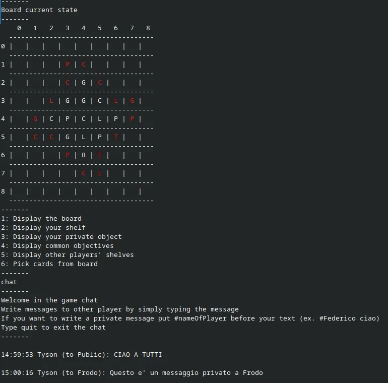
Terminal TUI
To cater to all types of users, the game offers two distinct interfaces: a modern JavaFX GUI featuring custom animations and a lightweight CLI (TUI) for terminal enthusiasts. The CLI uses ANSI escape codes to render the board's colors and grid, while the GUI focuses on a faithful visual reproduction of the game's components.
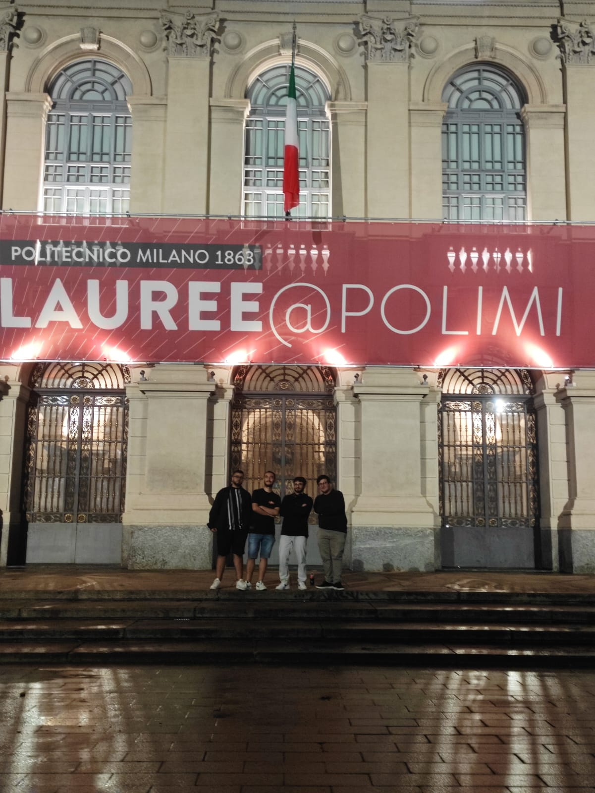
Polimi
Specializing in Computer Graphics and Game Development. Focusing on advanced rendering techniques and real-time applications.
Reply
Developed and maintained software products for the public healthcare organization in Lombardia, Italy.
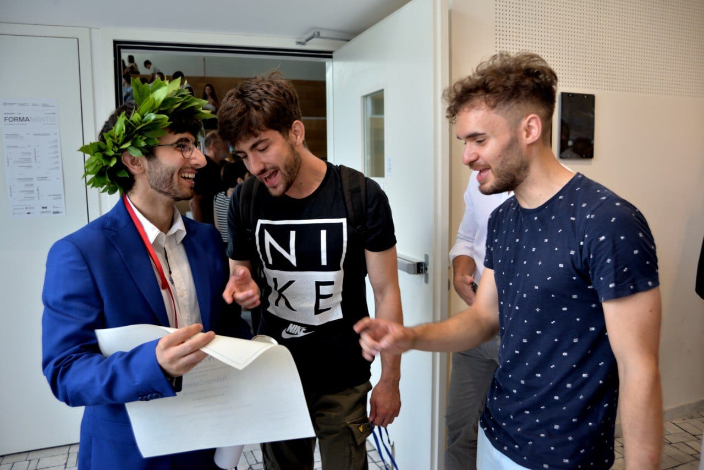
Graduation
Completed undergraduate studies in Computer Science and Engineering at Polytechnic University of Milan
High School
Studied at Giulietta Banzi Bazoli scientific high school.
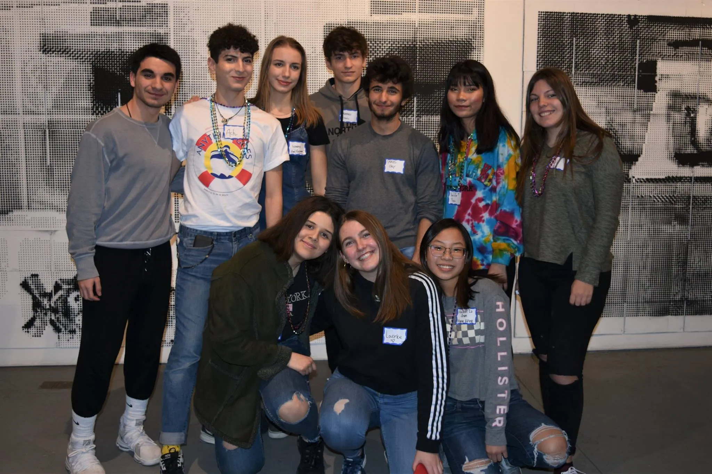
USA
Completed my fourth year of high school at Conard High School, West Hartford, CT. Here is where I took my first course in Computer Science.
Reach out through any of these platforms